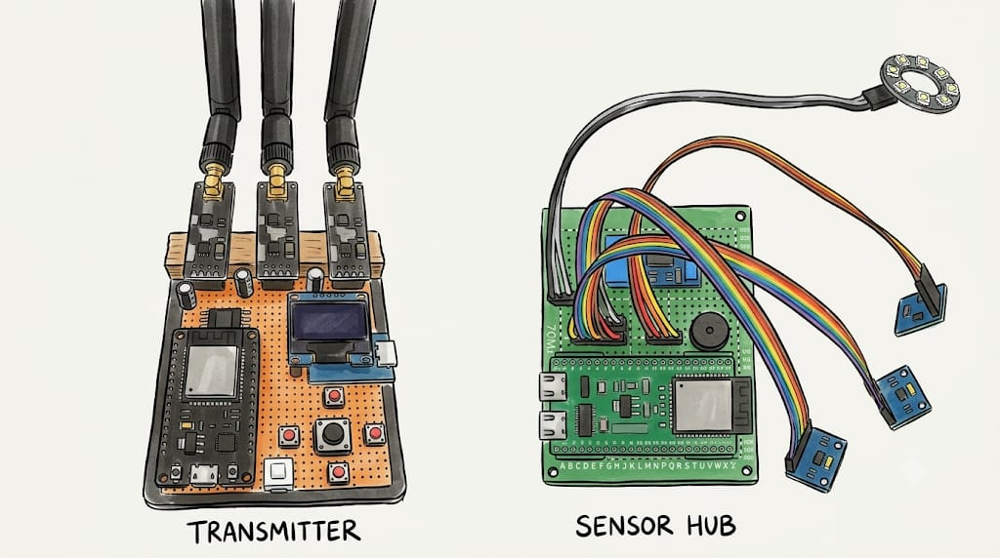
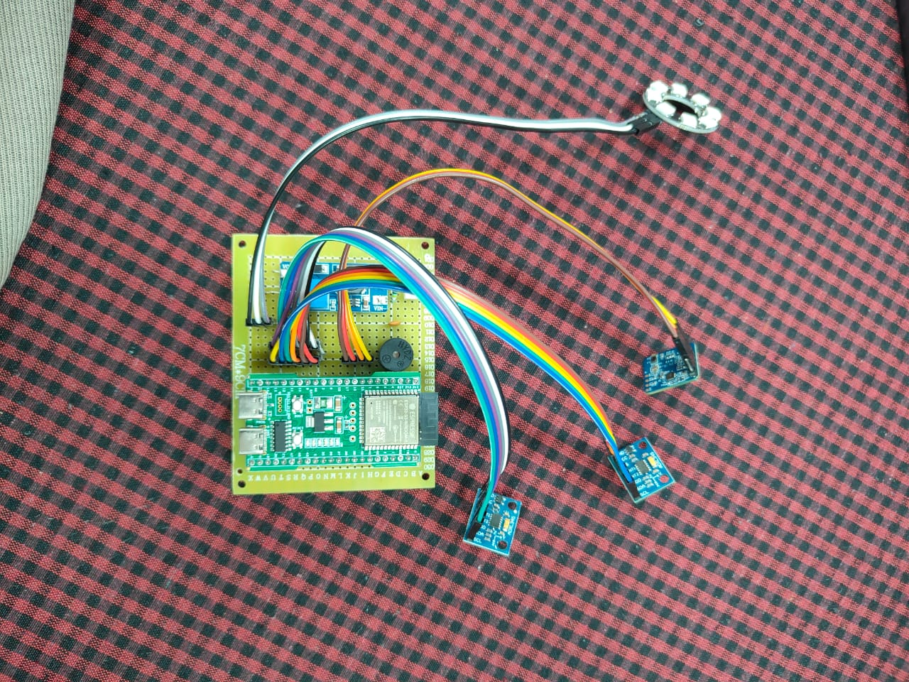
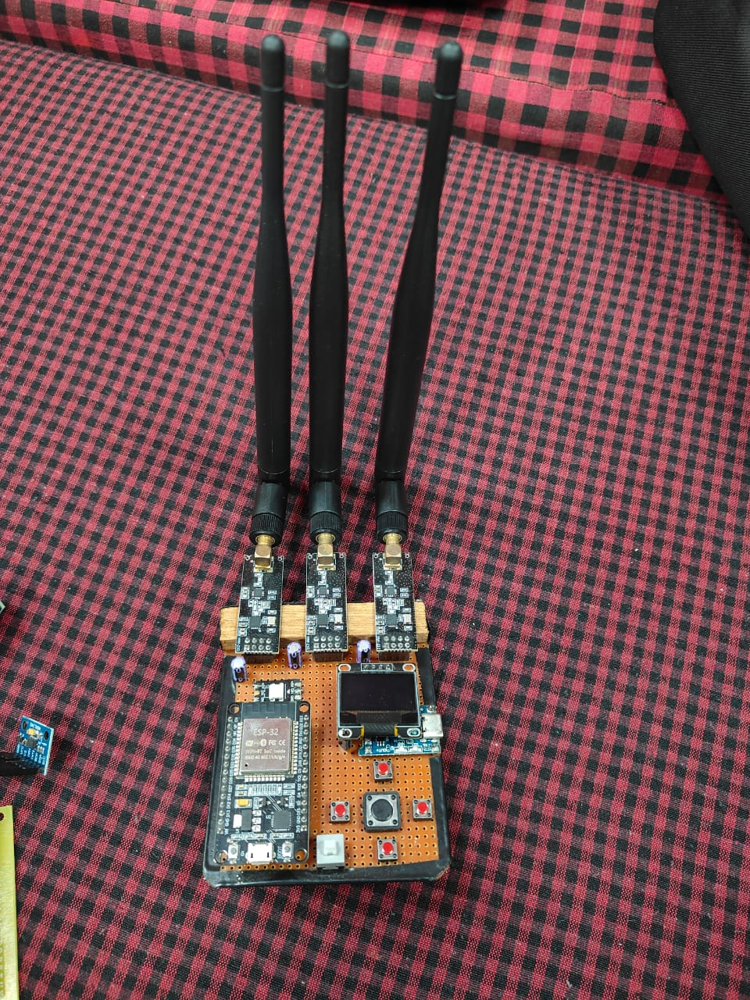

Gemini track · TigerData track · live hardware
Ground-sensing sentries that tell a person from an animal, a tunnel from a footstep, and a drill from a door slam. Then explain it in plain words on your phone.

Transmitter · Sensor hubThe problem
A person stands a shift in a radiation area, mostly to tell wildlife from a trespasser.
Digging happens beneath cameras and patrols. Ground vibration is the earliest evidence.
After hours the entry point is a shared wall or the vault, where no camera is pointed.
The idea
ADXL345 seismic probes bolted to steel spikes feel footsteps, digging and drilling. A 24 GHz mmWave radar sees who is on the surface.
A random forest on the ESP32, explainable fusion on the server, then rules for the active mission: animal or person, tunnel or walker, drill or knock.
A siren on the node or a silent alert, a Gemini explanation on the phone, and a tamper-evident record in TigerData.
The hardware, built and running

Sensor hub · sentry node ESP32-S3 ADXL345 probe A ADXL345 probe B buzzer WS2812 ring
Transmitter · control panel OLED 5-way keypad 3× nRF24 radioWhat the ground sounds like
Slow, heavy, low-pitched steps; 3 of 4 gait cues; radar confirms a surface target.
Localise and track
How it works
Band-pass, STA/LTA trigger, 15 features, random forest on the chip, probe A/B timing.
The server re-runs the forest, fuses seismic and radar with an explainable logistic regression.
Gait vote, tunnelling, drilling and impact rules. Every alert carries its reason in words.
Siren or silent alarm, phone app, OLED panel, WebSocket dashboard.
Explains every real alert for the active mission, in the alert path.
Stores every reading and alert with a SHA-256 evidence hash.
Explainable by construction
Amber at 50 %, red at 80 %. Rules on top of the model: one modality alone never alerts, and ML "environment" with a clear radar is capped.
Three missions on one design
| Mission | How it decides | Response |
|---|---|---|
| Nuclear zone | Gait score from 4 bipedal cues, majority vote over the last 5 step windows. Animals step faster, lighter, higher-pitched. | Siren from MEDIUM to scare wildlife off. Any person is CRITICAL. |
| Border tunnel | Rhythmic, low-frequency impacts from a source that does not move, nothing on the radar, sustained 4+ windows. | Silent alarm, so diggers are not warned. |
| Jewelry store | Continuous high-frequency vibration over 4× ambient for 3 windows; sharp impacts; a target in the showroom after hours. | "Drilling on wall/vault" CRITICAL, 15 s siren. |
| Perimeter | People and vehicles crossing, zones, loitering, tamper. | Siren from HIGH. |
Every alert carries its reason, for example "Rhythmic impacts every ~630 ms, source stationary, nothing on the surface radar".
Gemini track
Every real alert explained for the active mission: what, where, how sure, what to do. Streamed live over WebSocket.
One click summarises the site: nodes, open alerts, recent activity.
Plain-English questions become one guarded, read-only SQL query on TigerData.
gemini-flash-lite-latest · 12 s timeout · quota cooldown · template fallback, so an alarm never waits on the AI.
TigerData track
By the numbers
dashboard siren command to the node, measured
intrusion vs benign, edge model on synthetic validation data
seismic features computed on the ESP32
full site state for the OLED control panel
missions on one hardware design
lines across firmware, server, dashboard and ML
Built for the field
3–4 weeks per 18650 on a quiet site. A 2 W solar panel keeps it up indefinitely.
Business model
Example pricing. Approximate node BOM ≈ ₹2,500 (ESP32-S3, 2× ADXL345, LD2420, ring, buzzer, cell, box), so hardware pays for itself and funds installation.
Recurring revenue scales with sites, not with staff. Gemini flash-lite and TigerData compression keep the cost per site in rupees, not thousands.
Live demo, real hardware
| # | We do | You see |
|---|---|---|
| 1 | Walk past the node, site armed | Alert, buzzer and ring, Gemini narration on the phone |
| 2 | Switch to Nuclear, tap the floor lightly | "Wildlife in exclusion zone", not a person |
| 3 | Switch to Border, knock every 0.6 s | "Possible tunnelling", silent alarm |
| 4 | Switch to Jewelry, press a vibrating phone on the surface | "Drilling or cutting on wall/vault" |
| 5 | Silence from the OLED panel, ask Gemini a question | Siren stops; answer from TigerData |
Backup: the built-in simulator runs the same pipeline if the venue WiFi fails.
The team
hackCBS 9.0 · Order of Phoenix
One sentry for exclusion zones, borders and stores. Explained by Gemini, remembered by TigerData, built by hand this week.